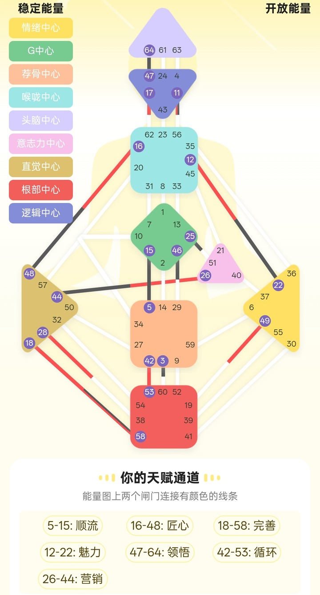

多数人学人类图，停在类型、权威、角色、通道——这三层讲的都是"你这个人"。PHS 往下走了一层，讲载具：这台身体机器需要什么样的运行条件。
消化条件读的是设计侧——图上红色那一半，出生前就在运转的无意识部分。你的口味来自后天（家乡、父母、工作），你的消化条件来自出生前。两者不一致，太正常了。
消化与环境不读类型、不读闸门、不读中心，读的是图上更深的 Color / Tone / Base 层。这一层多数免费出图工具不显示，要打开"变量"或"四箭头"面板才看得到。
处理条件对了，吸收就顺，大脑收到清亮的燃料，表现为头脑清晰、反应快、情绪稳。PHS 真正瞄准的是认知，健康只是顺带的结果。
每次直播 90 分钟（有回放），中间穿插 4 周实验陪伴。小班 6–20 人，因为每个人的图要单独看。
把 PHS 从"又一套养生说法"里拎出来，放回人类图的结构中去。
关键区分：六大类是"条件"，不是"食物"。PHS 不管吃什么。
破误解：环境是品质，不是地址。六种品质，在任何一个城市里都能找到。
前三个模块给的是"说法"，这个模块处理"怎么验证说法"。
下表是六类的核心条件（一句话版）。每一类再分两个方向——方向的具体命名以你自己的出图工具为准，本课程只统一"六类 + 两方向"的结构。
| 类别 | English | 核心条件 | 常见误配 |
|---|---|---|---|
| 食欲 | Appetite | 吃多少、什么节奏，由真实饥饿决定 | 按时间表吃、按份量吃，听不见饥饿信号 |
| 味觉 | Taste | 由当下的味觉吸引引导 | 靠"应该吃"而不是"想吃"下筷子 |
| 口渴 | Thirst | 温度与水分是主变量 | 常年冰饮或常年烫食，温度曲线单一 |
| 触觉 | Touch | 进食时的刺激量与身体状态 | 边刷手机边吃，身体始终处在应激态 |
| 声音 | Sound | 进食时的声学环境 | 长期在嘈杂或完全静默的一侧吃饭 |
| 光线 | Light | 光线条件与进食时机 | 深夜冷光灯下进食，或永远在同一个亮度 |
不是"你必须住在山里"，而是"你需要一种被包裹、入口可见的空间感"。这个品质，一个背墙座位就能给你。
| 环境 | English | 核心品质 | 城市对应 | 错配信号 |
|---|---|---|---|---|
| 洞穴 | Caves | 被包裹 + 入口可见 | 背墙座位、带门小间、屏风 | 在家也睡不沉，总想背对墙 |
| 市场 | Markets | 流动与交换 | 商圈、开放办公、换乘站 | 独处久了发闷 |
| 厨房 | Kitchens | 进行中、有制作发生 | 工坊、后厨、工作台 | 在纯展示空间不自在 |
| 山 | Mountains | 高度与俯瞰距离 | 高层、远景窗、顾问位 | 泡在细节人情里窒息 |
| 谷 | Valleys | 被环抱的连接带 | 内街、下沉广场、社区公园 | 空旷高处觉得荒凉 |
| 岸 | Shores | 交界与边缘 | 水边、窗边、阳台、桥 | 被按在正中央就难受 |
课上给的所有说法，都不要求你相信。只要求你做一次实验——只改一个条件，连续 14 天，用统一量表记录餐后一小时的头脑清晰度。
评估原则：不奖励"感觉有效"，只奖励"诚实实验"。实验失败也是合格产出。
边界放在卖点前面，是因为它决定这套东西能不能长期用下去。四条硬边界，课程全程遵守。
不告诉学员该吃什么、该忌口什么。PHS 只回答"在什么条件下吃"，卡路里与营养素是营养学的领地。
出现任何"治好了"的表述，立即拉回"这是你的主观观察"。不评价学员的饮食好坏，不制造焦虑。
六大类描述条件，不描述你是谁。它不能当性格测试用，也不能用来给别人贴标签。
人生决定回到类型与内在权威。PHS 是精细化调优，不是方向盘。图上说的与身体反应冲突时，以身体短期反应为准。
不是"听完觉得很有道理"，是可以拿在手上、可以复看、可以给别人看的东西。
每个参数读自哪一层、为什么，你自己能说清——包括两个方向到底该往哪边调。
3 天基线 + 14 天实验 + 判定栏。数据是你的，不是我给你的结论。
一页纸，贴冰箱。上面是你自己的条件、三条铁律，和一句边界声明。
不是 PPT 截图，是可以自己读、自己打印的材料。学员里也有在线版本：课件与速查卡。
四模块时间轴、行为化学习目标、考核权重与教学纪律。
主讲义：六章 + 四附录，含免责声明、六类速查表与实验协议。
只给讲师：时间轴、关键讲法、板书、答疑预案、讲师陷阱。
3 天基线 + 14 天实验 + 判定栏 + 清晰度锚定 + 空间观察。
一页纸贴冰箱：你的条件、三条铁律、边界声明。
正版原典渠道 + 中文资料评估 + 资料一致性警告（重要）。
每周一课，课后立刻进入实验。课上讲的是"说法"，课下做的才是"验证"。
模块一：变量四箭头与依据层，标出自己的图，做 3 天基线观察。
模块二：找到自己的六类与方向，写出实验假设，开始 14 天实验。
模块三：辨认环境品质，先动小半径，走三个不同品质的空间。
模块四：读数据、下结论、定稿条件卡、写下 90 天复看日期。
人类图领读者计划发起人
真好玩人类图平台创始人
天赋型人类图解读师、培训导师
擅长用通俗易懂的语言解说人类图，用游戏化思维交付培训内容，咨询时长 1000+，培训时长 1000+。
国际演讲会杰出会员（2014 年加入头马，曾任区域总监，至今完成 3 次 Distinguished Toastmaster-DTM），资深企业培训师。
讲课风格：不讲玄的，只给能带走、能验证、明天就能用的动作。

四周，一个变量，一个指标。不要求你相信任何说法，只要求你把结果记下来。
进入完整课件 →